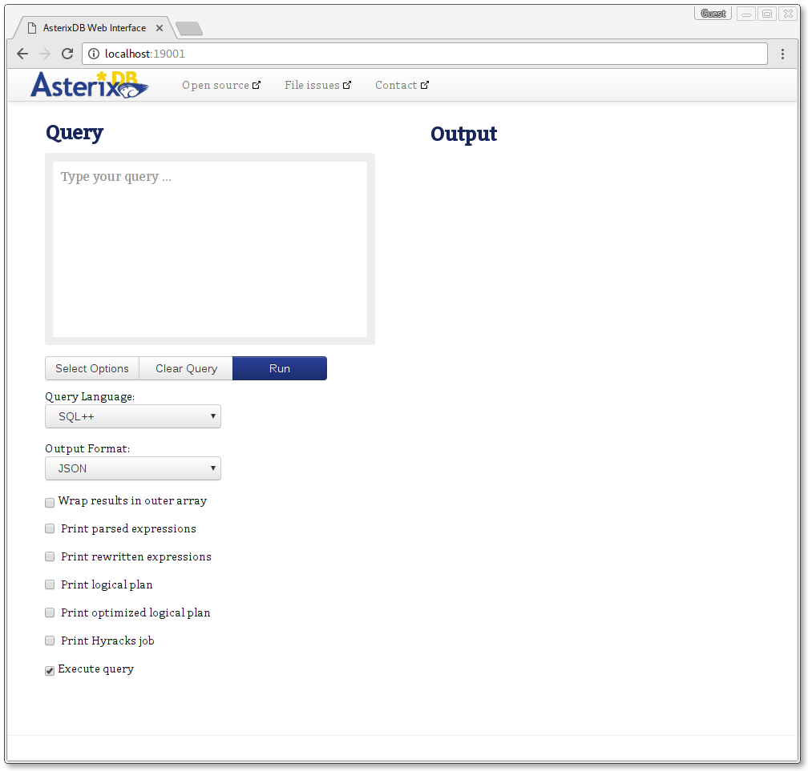

The fastest way to get set up with a single-machine sample instance of AsterixDB is to use the included sample helper scripts. To do so, in the extracted asterix-server directory, navigate to opt/local/bin/
user@localhost:~/ $cd asterix-server/ user@localhost:~/asterix-server $cd opt/local/bin
This folder should contain 4 scripts, two pairs of .sh and .bat files respectively. start-sample-cluster.sh will simply start a basic sample cluster using the configuration files located in opt/local/conf/.
user@localhost:~/a/o/l/bin $./start-sample-cluster.sh CLUSTERDIR=/home/user/asterix-server/opt/local INSTALLDIR=/home/user/asterix-server LOGSDIR=/home/user/asterix-server/samples/opt/logs INFO: Starting sample cluster... INFO: Waiting up to 30 seconds for cluster 127.0.0.1:19002 to be available. INFO: Cluster started and is ACTIVE. user@localhost:~/a/o/l/bin $
Now, there should be a running AsterixDB cluster on the machine. To go to the Web Interface, visit http://localhost:19001
 Fig. 1: The AsterixDB Web Interface
The above cluster was started using a script, but below is a description in detail of how precisely this was achieved. The config files here are analagous to the ones within samples/local/conf.
When running a cluster using the NCService there are 3 different kinds of processes involved:
The cluster startup follows a particular sequence, which is as follows:
This process is briefly illustrated in the diagram below:
Fig. 2: NCService startup sequence
To start a small cluster consisting of 2 NodeControllers (red and blue) and 1 ClusterController (cc) on a single machine only 2 configuration files are required. The first one is
blue.conf:
[ncservice] port=9091
It is a configuration file for the second NCService. This contains only the port that the NCService of the second NodeControllers listens to as it is non-standard. The first NCService does not need a configuration file, as it only uses default parameters. In a distributed environment with 1 NodeController per machine, no NCService needs a configuration file.
The second configuration file is
cc.conf:
[nc/red] txn.log.dir=/tmp/asterix/red/txnlog core.dump.dir=/tmp/asterix/red/coredump iodevices=/tmp/asterix/red [nc/blue] port=9091 txn.log.dir=/tmp/asterix/blue/txnlog core.dump.dir=/tmp/asterix/blue/coredump iodevices=/tmp/asterix/blue [nc] app.class=org.apache.asterix.hyracks.bootstrap.NCApplicationEntryPoint address=127.0.0.1 command=asterixnc [cc] address = 127.0.0.1 console.listen.port = 12345
This is the configuration file for the cluster and it contains information that each NCService will use when starting the corresponding NCDriver as well as information for the CCDriver.
To start the cluster simply use the following steps
Change directory into the asterix-server binary folder
user@localhost:~/ $cd asterix-server/ user@localhost:~/asterix-server $cd samples/local/bin
Start the 2 NCServices for red and blue.
user@localhost:~/asterix-server $bin/asterixncservice -config-file blue.conf > blue-service.log 2>&1 & user@localhost:~/asterix-server $bin/asterixncservice >red-service.log 2>&1 &
Start the CCDriver.
user@localhost:~/asterix-server $bin/asterixcc -config-file cc.conf > cc.log 2>&1 &
The CCDriver will connect to the NCServices and thus initiate the configuration and the start of the NCDrivers. After running these scripts, jps should show a result similar to this:
user@localhost:~/asterix-server $jps 13184 NCService 13200 NCDriver 13185 NCService 13186 CCDriver 13533 Jps 13198 NCDriver
The logs for the NCDrivers will be in $BASEDIR/logs.
To stop the cluster again simply run
$ kill `jps | egrep '(CDriver|NCService)' | awk '{print $1}'`
to kill all processes.
Deploying on multiple machines only differs in the configuration file and where each process is actually resident. Take for example a deployment on 3 machines, cacofonix-1,cacofonix-2,and cacofonix-3. cacofonix-1 will be the CC, and cacofonix-2 and cacofonix-3 will be the two NCs, respectively. The configuration would be as follows:
cc.conf:
[nc/red] txn.log.dir=/lv_scratch/asterix/red/txnlog core.dump.dir=/lv_scratch/asterix/red/coredump iodevices=/lv_scratch/asterix/red address=cacofonix-2 [nc/blue] txn.log.dir=/lv_scratch/asterix/blue/txnlog core.dump.dir=/lv_scratch/asterix/blue/coredump iodevices=/lv_scratch/asterix/blue address=cacofonix-3 [nc] app.class=org.apache.asterix.hyracks.bootstrap.NCApplicationEntryPoint storagedir=storage command=asterixnc [cc] address = cacofonix-1
To deploy, first the asterix-server binary must be present on each machine. Any method to transfer the archive to each machine will work, but here scp will be used for simplicity’s sake.
user@localhost:~
$for f in {1,2,3}; scp asterix-server.zip cacofonix-$f:~/; end
Then unzip the binary on each machine. First, start the NCService processes on each of the slave machines. Any way of getting a shell on the machine is fine, be it physical or via ssh.
user@cacofonix-2 12:41:42 ~/asterix-server/ $ bin/asterixncservice > red-service.log 2>&1 & user@cacofonix-3 12:41:42 ~/asterix-server/ $ bin/asterixncservice > blue-service.log 2>&1 &
Now that each NCService is waiting, the CC can be started.
user@cacofonix-1 12:41:42 ~/asterix-server/ $ bin/asterixcc -config-file cc.conf > cc.log 2>&1 &
The cluster should now be started and the Web UI available on the CC host at the default port.
The following parameters are for the master process, under the “[cc]” section.
| Section | Parameter | Meaning | Default |
|---|---|---|---|
| cc | active.port | The listen port of the active server | 19003 |
| cc | address | Default bind address for all services on this cluster controller | 127.0.0.1 |
| cc | api.port | The listen port of the API server | 19002 |
| cc | app.class | Application CC main class | org.apache.asterix.hyracks.bootstrap.CCApplication |
| cc | client.listen.address | Sets the IP Address to listen for connections from clients | same as address |
| cc | client.listen.port | Sets the port to listen for connections from clients | 1098 |
| cc | cluster.listen.address | Sets the IP Address to listen for connections from NCs | same as address |
| cc | cluster.listen.port | Sets the port to listen for connections from node controllers | 1099 |
| cc | cluster.public.address | Address that NCs should use to contact this CC | same as cluster.listen.address |
| cc | cluster.public.port | Port that NCs should use to contact this CC | same as cluster.listen.port |
| cc | cluster.topology | Sets the XML file that defines the cluster topology | <undefined> |
| cc | console.listen.address | Sets the listen address for the Cluster Controller | same as address |
| cc | console.listen.port | Sets the http port for the Cluster Controller) | 16001 |
| cc | cores.multiplier | The factor to multiply by the number of cores to determine maximum query concurrent execution level | 3 |
| cc | heartbeat.max.misses | Sets the maximum number of missed heartbeats before a node is marked as dead | 5 |
| cc | heartbeat.period | Sets the time duration between two heartbeats from each node controller in milliseconds | 10000 |
| cc | job.history.size | Limits the number of historical jobs remembered by the system to the specified value | 10 |
| cc | job.manager.class | Specify the implementation class name for the job manager | org.apache.hyracks.control.cc.job.JobManager |
| cc | job.queue.capacity | The maximum number of jobs to queue before rejecting new jobs | 4096 |
| cc | job.queue.class | Specify the implementation class name for the job queue | org.apache.hyracks.control.cc.scheduler.FIFOJobQueue |
| cc | profile.dump.period | Sets the time duration between two profile dumps from each node controller in milliseconds; 0 to disable | 0 |
| cc | result.sweep.threshold | The duration within which an instance of the result cleanup should be invoked in milliseconds | 60000 |
| cc | result.ttl | Limits the amount of time results for asynchronous jobs should be retained by the system in milliseconds | 86400000 |
| cc | root.dir | Sets the root folder used for file operations | ${java.io.tmpdir}/asterixdb/ClusterControllerService |
| cc | web.port | The listen port of the legacy query interface | 19001 |
| cc | web.queryinterface.port | The listen port of the query web interface | 19006 |
The following parameters for slave processes, under “[nc]” sections.
| Section | Parameter | Meaning | Default |
|---|---|---|---|
| nc | address | Default IP Address to bind listeners on this NC. All services will bind on this address unless a service-specific listen address is supplied. | 127.0.0.1 |
| nc | app.class | Application NC Main Class | org.apache.asterix.hyracks.bootstrap.NCApplication |
| nc | cluster.address | Cluster Controller address (required unless specified in config file) | <undefined> |
| nc | cluster.connect.retries | Number of attempts to contact CC before giving up | 5 |
| nc | cluster.listen.address | IP Address to bind cluster listener on this NC | same as address |
| nc | cluster.listen.port | IP port to bind cluster listener | 0 |
| nc | cluster.port | Cluster Controller port | 1099 |
| nc | cluster.public.address | Public IP Address to announce cluster listener | same as public.address |
| nc | cluster.public.port | Public IP port to announce cluster listener | same as cluster.listen.port |
| nc | command | Command NCService should invoke to start the NCDriver | hyracksnc |
| nc | core.dump.dir | The directory where node core dumps should be written | ${java.io.tmpdir}/asterixdb/coredump |
| nc | data.listen.address | IP Address to bind data listener | same as address |
| nc | data.listen.port | IP port to bind data listener | 0 |
| nc | data.public.address | Public IP Address to announce data listener | same as public.address |
| nc | data.public.port | Public IP port to announce data listener | same as data.listen.port |
| nc | iodevices | Comma separated list of IO Device mount points | ${java.io.tmpdir}/asterixdb/iodevice |
| nc | jvm.args | JVM args to pass to the NCDriver | <undefined> |
| nc | messaging.listen.address | IP Address to bind messaging listener | same as address |
| nc | messaging.listen.port | IP port to bind messaging listener | 0 |
| nc | messaging.public.address | Public IP Address to announce messaging listener | same as public.address |
| nc | messaging.public.port | Public IP port to announce messaging listener | same as messaging.listen.port |
| nc | ncservice.address | Address the CC should use to contact the NCService associated with this NC | same as public.address |
| nc | ncservice.pid | PID of the NCService which launched this NCDriver | -1 |
| nc | ncservice.port | Port the CC should use to contact the NCService associated with this NC | 9090 |
| nc | net.buffer.count | Number of network buffers per input/output channel | 1 |
| nc | net.thread.count | Number of threads to use for Network I/O | 1 |
| nc | public.address | Default public address that other processes should use to contact this NC. All services will advertise this address unless a service-specific public address is supplied. | same as address |
| nc | result.listen.address | IP Address to bind dataset result distribution listener | same as address |
| nc | result.listen.port | IP port to bind dataset result distribution listener | 0 |
| nc | result.manager.memory | Memory usable for result caching at this Node Controller in bytes | -1 (-1 B) |
| nc | result.public.address | Public IP Address to announce dataset result distribution listener | same as public.address |
| nc | result.public.port | Public IP port to announce dataset result distribution listener | same as result.listen.port |
| nc | result.sweep.threshold | The duration within which an instance of the result cleanup should be invoked in milliseconds | 60000 |
| nc | result.ttl | Limits the amount of time results for asynchronous jobs should be retained by the system in milliseconds | 86400000 |
| nc | storage.buffercache.maxopenfiles | The maximum number of open files in the buffer cache | 2147483647 |
| nc | storage.buffercache.pagesize | The page size in bytes for pages in the buffer cache | 131072 (128 kB) |
| nc | storage.buffercache.size | The size of memory allocated to the disk buffer cache. The value should be a multiple of the buffer cache page size. | 1/4 of the JVM allocated memory |
| nc | storage.lsm.bloomfilter.falsepositiverate | The maximum acceptable false positive rate for bloom filters associated with LSM indexes | 0.01 |
| nc | storage.memorycomponent.globalbudget | The size of memory allocated to the memory components. The value should be a multiple of the memory component page size | 1/4 of the JVM allocated memory |
| nc | storage.memorycomponent.numcomponents | The number of memory components to be used per lsm index | 2 |
| nc | storage.memorycomponent.pagesize | The page size in bytes for pages allocated to memory components | 131072 (128 kB) |
| nc | storage.metadata.memorycomponent.numpages | The number of pages to allocate for a metadata memory component | 8 |
| nc | txn.log.dir | The directory where transaction logs should be stored | ${java.io.tmpdir}/asterixdb/txn-log |
The following parameters are configured under the “[common]” section.
| Section | Parameter | Meaning | Default |
|---|---|---|---|
| common | active.memory.global.budget | The memory budget (in bytes) for the active runtime | 67108864 (64 MB) |
| common | compiler.framesize | The page size (in bytes) for computation | 32768 (32 kB) |
| common | compiler.groupmemory | The memory budget (in bytes) for a group by operator instance in a partition | 33554432 (32 MB) |
| common | compiler.joinmemory | The memory budget (in bytes) for a join operator instance in a partition | 33554432 (32 MB) |
| common | compiler.parallelism | The degree of parallelism for query execution. Zero means to use the storage parallelism as the query execution parallelism, while other integer values dictate the number of query execution parallel partitions. The system will fall back to use the number of all available CPU cores in the cluster as the degree of parallelism if the number set by a user is too large or too small | 0 |
| common | compiler.sortmemory | The memory budget (in bytes) for a sort operator instance in a partition | 33554432 (32 MB) |
| common | compiler.sort.parallel | Enable full parallel sort for queries | true |
| common | compiler.sort.samples | The number of samples taken from each partition to guide the sort operation when full parallel sort is enabled | 100 |
| common | compiler.textsearchmemory | The memory budget (in bytes) for an inverted-index-search operator instance in a partition | 33554432 (32 MB) |
| common | compiler.windowmemory | The memory budget (in bytes) for a window operator instance in a partition | 33554432 (32 MB) |
| common | log.level | The logging level for master and slave processes | WARNING |
| common | max.wait.active.cluster | The max pending time (in seconds) for cluster startup. After the threshold, if the cluster still is not up and running, it is considered unavailable | 60 |
| common | messaging.frame.count | Number of reusable frames for NC to NC messaging | 512 |
| common | messaging.frame.size | The frame size to be used for NC to NC messaging | 4096 (4 kB) |
| common | metadata.callback.port | IP port to bind metadata callback listener (0 = random port) | 0 |
| common | metadata.listen.port | IP port to bind metadata listener (0 = random port) | 0 |
| common | metadata.node | the node which should serve as the metadata node | <undefined> |
| common | metadata.registration.timeout.secs | how long in seconds to wait for the metadata node to register with the CC | 60 |
| common | replication.log.batchsize | The size in bytes to replicate in each batch | 4096 (4 kB) |
| common | replication.log.buffer.numpages | The number of log buffer pages | 8 |
| common | replication.log.buffer.pagesize | The size in bytes of each log buffer page | 131072 (128 kB) |
| common | replication.max.remote.recovery.attempts | The maximum number of times to attempt to recover from a replica on failure before giving up | 5 |
| common | replication.timeout | The time in seconds to timeout when trying to contact a replica, before assuming it is dead | 15 |
| common | storage.max.active.writable.datasets | The maximum number of datasets that can be concurrently modified | 8 |
| common | txn.commitprofiler.enabled | Enable output of commit profiler logs | false |
| common | txn.commitprofiler.reportinterval | Interval (in seconds) to report commit profiler logs | 5 |
| common | txn.job.recovery.memorysize | The memory budget for each job job (in bytes) used for recovery | 67108864 (64 MB) |
| common | txn.lock.escalationthreshold | The maximum number of entity locks to obtain before upgrading to a dataset lock | 1000 |
| common | txn.lock.shrinktimer | The time (in milliseconds) where under utilization of resources will trigger a shrink phase | 5000 |
| common | txn.lock.timeout.sweepthreshold | Interval (in milliseconds) for checking lock timeout | 10000 |
| common | txn.lock.timeout.waitthreshold | Time out (in milliseconds) of waiting for a lock | 60000 |
| common | txn.log.buffer.numpages | The number of pages in the transaction log tail | 8 |
| common | txn.log.buffer.pagesize | The page size (in bytes) for transaction log buffer | 4194304 (4MB) |
| common | txn.log.checkpoint.history | The number of checkpoints to keep in the transaction log | 0 |
| common | txn.log.checkpoint.lsnthreshold | The checkpoint threshold (in terms of LSNs (log sequence numbers) that have been written to the transaction log, i.e., the length of the transaction log) for transaction logs | 67108864 (64 MB) |
| common | txn.log.checkpoint.pollfrequency | The frequency (in seconds) the checkpoint thread should check to see if a checkpoint should be written | 120 |
| common | txn.log.partitionsize | The maximum size (in bytes) of each transaction log file | 268435456 (256 MB) |
For the optional NCService process configuration file, the following parameters, under “[ncservice]” section.
| Parameter | Meaning | Default |
|---|---|---|
| address | The address the NCService listens on for commands from the CC | (all addresses) |
| port | The port for the NCService listens on for commands from the CC | 9090 |
| logdir | Directory where NCService logs should be written (‘-’ indicates that output should go to stdout) | ${app.home}/logs (${user.home} if ‘app.home’ not present in NCService Java system properties. |